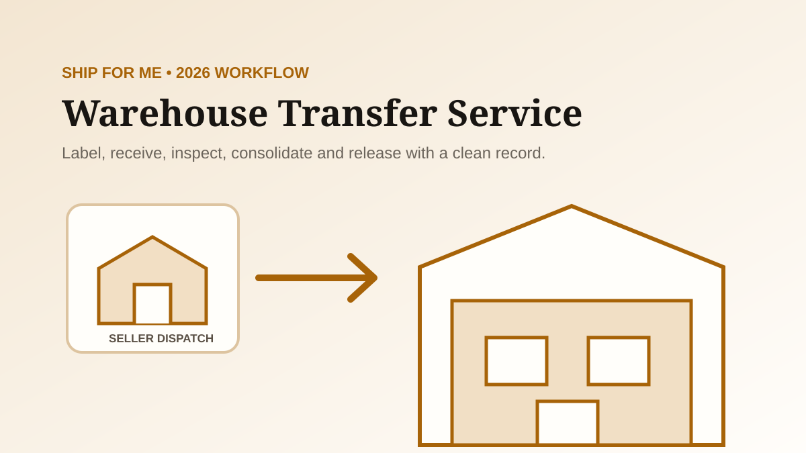

CSSBuy Warehouse Transfer Service 2026: Ship For Me Workflow
CSSBuy’s warehouse transfer service is the Ship For Me workflow: you purchase goods yourself, send them to the CSSBuy warehouse in China, and then use warehouse services and international shipping. CSSBuy currently describes the service as forwarding from China through its Hangzhou warehouse, with package consolidation, QC checking, label handling, vacuum packaging, reinforced packaging and up to 90 days of free storage.
The service removes CSSBuy from the original purchase, so record quality matters more. CSSBuy did not choose the seller, variant, price or domestic courier. If a parcel arrives without a usable identity, warehouse staff must solve a matching problem before they can create a clean item record. This guide shows how to control that handoff.
Choose Ship For Me for the right reason
Ship For Me fits buyers who can place and pay for the Chinese order themselves, negotiate directly with a seller, or move goods already located in China. It can also combine parcels from different sellers before international delivery. Buy For Me is different: CSSBuy places the domestic purchase based on your submitted item details.
The important distinction is accountability. With Buy For Me, the CSSBuy order record begins before seller payment. With Ship For Me, your own receipt and seller conversation are the purchase record. The warehouse can inspect what arrives, but it cannot reconstruct an undocumented agreement with the seller.
Decision rule: use warehouse transfer only when you can preserve the seller order, control the domestic address and provide a domestic tracking record that CSSBuy can match.
Get the current warehouse address from your account
Do not copy a warehouse address from an old guide, screenshot, forum post or previous shipment. Warehouse details, recipient identifiers and formatting requirements can change. Start the Ship For Me process in your own CSSBuy account and use the current address and personal identification fields shown there.
Copy each address component exactly. Chinese domestic delivery systems may use phone numbers and recipient text as operational identifiers. A small omission can route the parcel correctly to the building while still making it difficult to connect to your account. Preserve a screenshot of the address used for the seller order.
Create the transfer record before dispatch
CSSBuy’s public Ship For Me sequence begins with getting the warehouse address and submitting item information. Do not wait until the carrier says delivered. Build the expected package record while the seller can still correct a label or provide the domestic tracking number.
Record the seller, marketplace order number, product title, exact variation, quantity, paid value, domestic carrier and tracking number. Add a concise description that warehouse staff can compare with the parcel contents. If one seller sends several packages, create a one-to-many record rather than assuming the first number covers everything.
Give the seller a shipping instruction, not a vague address
Tell the seller to use the exact warehouse address and required recipient identifiers, protect the items for domestic transit, and provide the final tracking number. Ask whether the order will be split. If invoices, promotional material or retail packaging affect your later parcel plan, clarify that before dispatch.
Do not ask the seller to hide the shipment identity. The warehouse needs enough information to match it. If you need labels or invoices removed for the international parcel, that is a warehouse-service instruction after receipt, not a reason to make the domestic parcel anonymous.
Track the domestic handoff separately
A warehouse transfer has two logistics journeys. The first is the Chinese domestic shipment from seller to CSSBuy. The second begins later when you submit an international parcel. Keep their tracking numbers separate.
For the domestic leg, record carrier acceptance, movement, delivery time and proof of delivery. A seller-created number without an acceptance scan is not the same as a shipped parcel. A delivered scan is not the same as completed warehouse intake. CSSBuy still needs to receive, identify, inspect and store the goods.
Understand the receiving gap
When the domestic carrier marks a package delivered, allow for warehouse intake. Staff may process many parcels, and the delivered event identifies a carrier handoff rather than a finished inventory record. The warehouse must match the recipient information, inspect the outer package, open it when appropriate, count the items, photograph them and attach the result to your account.
If a reasonable receiving period passes without a match, use one evidence bundle: your Ship For Me submission, domestic tracking number, carrier delivery timestamp, seller order number, parcel count and a clear item description. Ask whether the package is pending intake or cannot be matched. Do not create several contradictory submissions for the same box.
Use QC as an acceptance decision
CSSBuy advertises QC checking and warehouse photos for Ship For Me parcels. Treat those photos as a receiving inspection, not a guarantee of authenticity or hidden construction. Compare the visible colour, size tag, quantity, obvious defects, accessories and seller-specific promises while the domestic transaction may still be actionable.
If the default photos cannot answer a material question, request the needed view before consolidating or shipping internationally. A good request is measurable: show the size label, measure the insole, photograph the damage under neutral light, or place all included pieces in one frame. Use the QC photos guide for a full inspection workflow.
Plan return responsibility before the seller ships
Because you made the original purchase, the seller’s return rules and your payment arrangement control the commercial dispute. CSSBuy may help send an eligible item back domestically, but the warehouse cannot create buyer protection that did not exist in your direct transaction.
Before ordering, ask who pays return freight, how many days the seller allows, when that period begins and whether custom or wholesale goods are excluded. Warehouse intake consumes time, so a short return window requires fast QC decisions. Keep seller messages and payment proof until the item is accepted and shipped internationally.
Build compatible consolidation groups
Package consolidation can reduce repeated first-weight charges, but not every stored item belongs in one parcel. Group items by physical compatibility and route eligibility. Soft clothing may benefit from vacuum packaging. Fragile goods may require reinforcement. Liquids, batteries, powders, fragrances or other sensitive attributes can reduce available shipping lines for everything in the box.
Compare actual weight with possible volumetric weight. A large retail box can consume more chargeable volume than the product itself. Decide which packaging is disposable, optional or essential. CSSBuy’s current service list includes vacuum and reinforced packaging, but those goals can conflict: maximum protection may increase volume while maximum compression may reduce protection.
Use the 90-day storage window as a deadline
CSSBuy currently advertises up to 90 days of free storage for Ship For Me packages. Treat the period as planning time, not indefinite storage. Record the intake date for every item and set your own earlier release date. If parcels arrive over several weeks, the oldest package reaches its deadline first.
Your release rule might be “ship when all four sellers arrive,” “submit when the group reaches a target weight,” or “release the oldest item by day 60 even if one seller is late.” A written rule prevents a cheap consolidation saving from turning into missed storage action.
Keep a warehouse transfer ledger
| Field | Why it matters |
|---|---|
| Seller order and payment | Proves what you bought and under which terms |
| Expected package count | Reveals split or missing domestic shipments |
| Domestic tracking number | Connects seller dispatch to warehouse delivery |
| CSSBuy transfer record | Connects the delivered box to your account |
| QC decision and date | Controls acceptance or return timing |
| Storage arrival date | Starts your consolidation deadline |
| Parcel group | Controls packing and route compatibility |
One simple spreadsheet can hold these fields. Use one row per physical domestic parcel, not one row per seller order, because sellers can split shipments. Link multiple rows to the same order when necessary.
A clean five-step transfer workflow
- Open Ship For Me and copy the current account-specific warehouse details.
- Create the expected item and parcel record before the seller dispatches.
- Give the seller the exact address, identity fields and request for final tracking.
- Reconcile domestic delivery with warehouse intake, then make a documented QC decision.
- Group compatible items, choose packing services and submit the international parcel before your internal deadline.
When warehouse transfer goes wrong
For an unmatched parcel, provide delivery evidence and identity details. For a quantity mismatch, compare the seller’s package count with the warehouse receiving record. For damage, separate domestic outer-box damage from product condition and preserve photos. For the wrong variation, compare the seller order with the warehouse label. For an approaching return deadline, state the exact deadline in the item note.
Do not ask the warehouse to solve every issue as “missing package.” Name the failure point: seller never dispatched, carrier delivered but intake is pending, package is received but unmatched, contents do not match the order, or the item is accepted and only the international parcel remains.
The transfer succeeds when every handoff has an identifier
CSSBuy warehouse transfer is most useful when it combines buying freedom with controlled logistics. The risk appears at the boundary between your seller transaction and the warehouse system. Solve that risk before dispatch with the current address, a complete transfer record, the domestic tracking number and a product description that can be verified.
After intake, use QC to make an acceptance decision, storage to build compatible groups and packing services to control chargeable weight and damage risk. With one ledger connecting seller, domestic parcel, warehouse item and international shipment, Ship For Me becomes a traceable workflow rather than a box sent to an address.